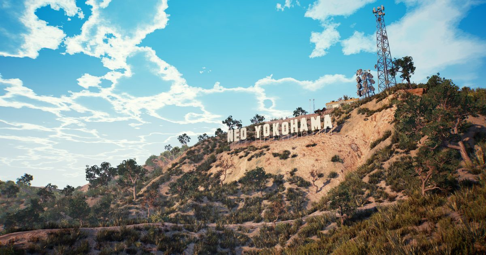

2026-11-25 · 单机游戏 / 开发与发行

几乎所有中文报道都用了同一个句式：「经过五年开发，游戏内容已全部完成，目前转入打磨与优化。」 这句话没错，但它把最关键的信息抹平了—— 如果内容真的做完了，那这一年多到底在修什么？ 官方那封公开信里其实已经写明了，只是用了三个形容词。 我们把那三个词和八月科隆展的三条差评排在一起看，发现它们是一一对应的。
11 月 24 日，铃空游戏（NEKCOM）在官方社交账号公布发售日：2027 年 10 月 28 日。 发行方为 4Divinity（部分中文报道记为 2P Games，两个口径并存，以商店页署名与官方公告为准）。 平台为 PC 与 PS5，语言含简体中文、英文、日文——日文是配音语言，不是字幕语言， 这一点后面会再提。
官方原文的措辞值得逐字读一遍： 「Reaching this milestone after five years of development means a lot to our entire team. With core game content now complete, we're dedicating our full focus to polishing and optimizing the experience so that when you step into Showa American Story, it feels cohesive, responsive, and complete.」
三个形容词：cohesive（连贯）、responsive（响应）、complete（完整）。 在任何一份游戏延期公告里，这三个词都算常规。但「responsive」这个词出现在一款单机动作 RPG 的公告里，非常罕见—— 它不是内容词，是延迟词。内容团队说「连贯」和「完整」，程序和关卡团队听到的其实是「手感」。
然后是时间线上的三个坐标，媒体基本只报了最后一个：
从「首次让公众上手」到「发售」，间隔约 14 个月。 对一款已经能给人试玩的单机作品来说，这个数字比「延期一年」更刺眼： 它意味着玩家已经摸过的东西，还要再改一年多才敢交。
顺带一个几乎没人注意的细节：Steam 商店页现在写的发售日是「27 Oct, 2027」，比官方公告早一天。 这不是谁写错了，是时区口径——Steam 的日期字段按太平洋时间渲染，10 月 28 日的北京时间零点，在美西还是 27 日上午。 对一款主打海外市场的作品，这种一天之差会在愿望单提醒、预购解锁和好评起算日上同时生效。小事，但能看出这家公司现在对「日期」这件事的谨慎程度。
科隆试玩之后，玩家反馈集中在三点：操作延迟明显、战斗过于简单、主角手感不佳。 中文报道基本把这三条当成「需要打磨」的证据一笔带过。 但如果你把它们和官方那三个词对齐，会发现这不是三件独立的事，是一条因果链。
先看「操作延迟明显」和「战斗过于简单」为什么能同时成立。 一般直觉是矛盾的：手感差的游戏通常显得难，怎么会「过于简单」？ 答案在补偿机制里。当一款动作游戏的输入延迟偏高，玩家的第一反应不是「练」，是放弃精细操作—— 改用霸体、改用无脑连段、改用拉开距离磨血。 而设计者在内部测试时一定会看到同样的行为，于是为了让流程「顺」，会把敌人攻击的前摇拉长、把伤害数字调低、把判定窗口放宽。 结果就是：延迟没修，难度先被削了。 最后呈现出来的，正是「打起来迟钝，但一点都不难」。
这也解释了为什么官方在公告里同时承诺 cohesive、responsive 和 complete： 三个词分别对应关卡节奏、输入响应、内容收口。 而罗翔宇在被问到延期的目的时说得很直白——改手感、QA、修 bug，不加新内容。 换句话说，这一年多不是在建东西，是在重新标定已经建好的东西。
在游戏工业里，这两件事的成本差着一个量级。 加内容是加法：新关卡、新敌人、新动画，可以并行外包。 重标定是乘法：改一次输入缓冲，全游戏每个可操作段落都要重跑一遍；改一次镜头跟随，所有战斗场景的构图都要复核。 内容完成度和「能不能玩」之间，隔着的正是这段乘法。
还有一个被中文报道写成「提升品质」一笔带过的信息：开发中期，游戏引擎换成了虚幻引擎 5。
这句话在 PR 语境里是加分项，在工程语境里是事故现场。 中期换引擎意味着资产要重导、光照体系要重建、性能预算要重算。 UE5 的默认渲染路径带来了两样东西：Lumen 的实时光照和TSR 的时间上采样。 前者吃 GPU 帧时间，后者要累积多帧才能出干净画面——两者都会把「一帧」拉长。
而输入延迟的本质，就是帧时间的函数。 你的按键在帧开始时被采样，画面在帧结束时才更新；如果一帧要 33 毫秒，最坏情况下玩家要多等一帧才看到反应； 再叠加上采样、垂直同步、以及部分玩家会开的帧生成，延迟会继续往上叠。 对回合制或策略游戏，这无所谓；对一款要求「闪避—反击—处决」连贯成立的动作 RPG，这就是致命伤。
所以「操作延迟」这条差评，真凶大概率不在策划的数值表里，而在渲染管线和输入线程的排队上。 常见的解法是：重配帧预算（降 Lumen 质量或改用预烘焙）、打开/关闭特定的上采样路径、 把动画前摇与取消窗口重新标定、加入输入缓冲、缩短打击停顿（hitstop）。 这一套做下来，是系统级的手术，不是「优化一下」。 一年时间够不够？对 25 小时主线的体量，勉强。
这里要给铃空说一句公道话：中期换 UE5 在国内单机项目里并不罕见， 2023 年之后立项或中途重做的团队，几乎都面临同一个选择——留在 UE4 拿稳定帧率，还是上 UE5 拿画面议价权。 对一款卖点是「昭和美学的荒诞视觉」的作品，画面就是它进海外商店首页的门票。 这个决策不难理解，只是它的账要延期来还。
中文报道里漏得最彻底的一条，是官方公布的后续路线图： Playtest → Demo 展示 → Steam Next Fest → Early Access 抢先体验。
把它和「2027 年 10 月 28 日发售」放在一起，立刻出现一个没人回答的问题： 10 月 28 日是 1.0，还是抢先体验的首日？
两种解读的后果完全不同。 如果是 1.0，那 EA 阶段必须排在 10 月之前——也就是最晚 2027 年上半年要开卖一个「不完整版」， 然后在半年内转正。对一款已经被延期两次、口碑全靠「宁缺毋滥」撑着的作品，这个操作风险极高。 如果是 EA 首日，那 10 月 28 日就不是「发售」，是「开卖一个还在改的东西」， 而官方公告里的「complete」一词会立刻失去分量。
目前官方没有说清。Steam 页面状态是「即将推出」，没有任何 EA 标识。 我们的判断是：路线图是从更早的发行计划里沿用的，未必会全部执行—— 但既然它被写进了公告，就构成了对玩家的承诺，而承诺是要兑现的。 这件事值得在 Demo 上线时再问一次。
罗翔宇给出的主线时长是约 25 小时。 把它和「五年开发」放在一起，会得到一个不太常见的比值： 每小时主线，摊到约 2.4 个月。
这个数字本身不说明好坏。叙事驱动的动作 RPG，行业里从 1 个月/小时到 3 个月/小时都有。 但它说明一件事：这五年里，有相当一部分时间没有变成「更多内容」，而是变成了「重做」。 中途换引擎、两次推档期、从「2024」的模糊窗口一路挪到 2027 年 10 月—— 这些都不产出新的关卡，只产出「同一段关卡的第二版」。
对玩家来说，这个换算的现实含义是：不要期待它内容特别多。 25 小时主线 + 支线，按常规比例大概是 35–45 小时的总量， 属于「一个周末加几个晚上」的体量，不是《巫师 3》那种吞时间的怪物。 它的卖点从来不是体量，是那个设定——昭和六十六年（1991 年）， 日本用经济实力买下了美国大部分土地，一个死而复生的十九岁替身演员千草蝶子， 在既荒诞又熟悉的公路上开车、打僵尸、遇见各种怪人。
这个设定在海外比在国内更能打通。Eurogamer 的报道标题用了「promising」， 文末却补了一刀：题材与《如龙》相近，但出自一家「还没有那种讽刺功力」的新团队。 罗翔宇自己回应这个比较时说「很高兴被这样联想」，同时承认问题存在。 这种回应方式是对的：接下比较，然后闭嘴去改。
因为它的主力观众不在国内。
一款设定为「日本买下美国」、配日语配音、在科隆开放试玩、由 4Divinity 做海外发行的中国单机， 它的评价体系天然锚在海外动作游戏上：《如龙》《只狼》《生化危机》。 这些作品的共同点是输入响应被玩家当成及格线，而不是加分项。 你画面再怪、设定再妙，只要按下去有半拍迟滞，评论区第一句话就会是「手感很飘」。
反过来，如果这一年真把手感修好了，它就是今年最容易被海外媒体写成长文的那类作品： 异质美学 + 明确作者性 + 可描述的玩法循环。 这也是为什么我们倾向于把这次延期读成「一次正确的延期」—— 它把资源压在了唯一无法靠营销补救的地方。
给分逻辑：设定与美术的独特性拿高分，发行与沟通的透明度扣分。 7.2 的意思是「值得进愿望单，但不建议预购」。 复核节点很明确——Demo 上线那天，先测输入延迟，再谈别的。
整件事里最值得记的不是日期，是公告的措辞纪律。 一家中国团队在海外平台用英文发布延期消息，选了 cohesive / responsive / complete 三个词， 既没有承诺新功能，也没有甩锅给「市场环境」，还顺手感谢了耐心。 这在国产单机的沟通史里属于高分答卷——比「为了更好的体验」这种空心话强得多。
另一个观察：从 8 月科隆到 11 月定档，中间隔了三个月。 这三个月里官方没有发过一次「我们正在努力」的情怀小作文，只在 Steam 页悄悄把年份改成 2027，然后等定档才开口。 先改事实，再发声明——这个顺序是对的。
我们不认为「延期＝负责」。延期只是把风险从玩家身上挪回团队身上，挪得好不好要看挪去修什么。 如果这一年用来加内容、加系统、加联动，那是一次失败的延期； 如果用来修输入、修手感、修 bug，那是一次必要的延期。 从官方自述和试玩反馈看，这次属于后者。
但我们保留一个疑问：路线图里的 Early Access 究竟是给谁的？ 如果是为了回收现金，那是发行决策，玩家只能接受； 如果是为了拿真实玩家数据来标定手感，那它应该排在定档之前，而不是和定档并列。
| 路径 | 代表做法 | 代价 | 适合谁 |
|---|---|---|---|
| 一次性交付 | 内容做满再卖，发售后靠补丁 | 资金压力全在团队，一次翻车没有第二次机会 | 有外部资金、卖点靠首周口碑的作品 |
| EA 长跑 | 先卖框架，用真实玩家数据迭代两三年 | 首发评价被永久留在商店页上 | 系统型、沙盒型、可以「边玩边长」的作品 |
| 延期打磨 | 内容封版，把时间全押在手感与稳定性上 | 资金继续烧，玩家耐心被消耗一次 | 叙事驱动、以「第一次体验」为唯一卖点的作品 |
《昭和米国物语》走的是第三条，但路线图里留了第二条的门。 这两条路能不能同时走？能，前提是EA 阶段的版本足够干净—— 而「干净」恰恰是现在这个版本还缺的东西。这就是那个矛盾的具体形状。
Demo 上线后，别急着看风景，先做这件事：打开手机慢动作录像（240fps），对着屏幕拍你的手和角色。 按一次闪避，录下来，逐帧数：从手指按下到角色开始位移，一共几帧。
再测一次，这次把画质预设从「高」降到「中」，关掉帧生成，锁 60 帧。 如果两次的帧数差距很大，说明瓶颈在渲染管线，不在这台机器。 这个测试不需要任何工具，只需要一部能拍慢动作的手机。 我们会在 Demo 上线当天把结果补在这篇文章下面。
一、事实层面。2027 年 10 月 28 日发售，PC / PS5，简中英日， 五年开发、核心内容完成、转入打磨，主线约 25 小时，科隆试玩累计超过 6000 人。 内容不缺，缺的是「按下去有反应」。
二、判断层面。这次延期的实质不是补内容，是补响应。 中期换 UE5 抬高了帧预算，手感问题大概率出在渲染与输入的链路上， 而不是数值表上。这类问题只能靠时间堆，不能靠加班赶。
三、不确定层面。Early Access 究竟排在 10 月 28 日之前还是就是那一天，官方没说。 这个口径不清，会直接影响首发那周的评价走向。
我们愿意为这次延期说一句好话：在一个普遍靠「先卖再说」的市场里， 肯把已经能给人试玩的版本再压十四个月，是需要一点底气的。 底气来自哪里不知道，但只要它真的花在「手感」上，玩家最后是能感觉到的—— 那种感觉没有形容词，就是你按下闪避，角色在你预期的位置动了一下。
信息来源：铃空游戏（NEKCOM）官方社交账号公告（2026-11-24）、Steam 商店页 appid 1687540（核对时间 2026-11-25， 页面显示发售日 27 Oct 2027）、Eurogamer《Promising action-RPG, Showa American Story, has been delayed into late 2027》（2026-11-24）、 Automaton 对制作人罗翔宇的采访（2026-10）、gamescom 2026 现场资料与中文媒体转述（17173、中华网娱乐、3DM、GameApps.hk）。 发行方署名存在 4Divinity 与 2P Games 两种口径，平台存在是否含 PS4 的两种口径，文中已标注并存；换算与结论为 8bitACG 编辑部推演，非官方数据。